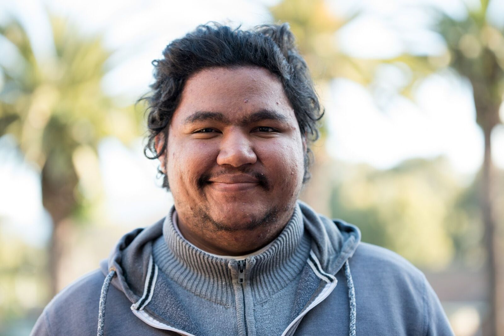

About Me
As a critical thinker, one should always question every occurrence. The I.T field in general is an interesting one as it has many different aspects to it. Be it games or just Microsoft Office, there are many things to be done in front of a computer. A few interests would be building computer towers, networking and editing (images and videos), but the most interesting would be programming. There is a thrill to solving difficult problems. By combining a passion for gaming, a video game programmer seems to be the most interesting line of work.
Academic Details
2018: Salesians Life Choices Academy
Fullstack Web Development (6 months full-time course)
The Life Choices Academy is a full-time program which empowers youth from the Cape Flats with life, practical and professional development skills. We did intensive study of the following web development languages: HTML, CSS, SASS, jQuery, JavaScript, Node and MongoDB. As part of our professional development, we had the opportunity to use online resources such as MOOCs, were taught Design Thinking and made use of resources for personal reflection, such as DISC profiles and SMART goal setting.
This course has allowed me to alter my way of thinking and develop a method of looking at the whole picture more objectively than I did before. It has also forced me to engage with people from different backgrounds, allowing me to put my objective views into practice. I have begun to think more about what I want to do in the future and to believe that I can achieve it.
2014-2017: The University of the Western Cape
BSc Computer Science (Incomplete)
I did not complete the course but I gained a lot of valuable skills from it. I understand the fundamentals of programming, algorithms and complexity. I have a good understanding of calculus. I also know how Information Systems work and how to work as a Business Analyst and Project Manager.
2009-2013: Rylands High School
Matric Certificate: Bachelors Degree
- English
- Afrikaans
- Mathematics
- Life Sciences
- Physical Science
- Information Technology (Distinction)
- Life Orientation
Skills
- Basic coding ethics
- Object-orientated programming
- Knowledge of algorithms and complexity
- Java Documentation
- Knowledge of Computer Architecture and Assembly
- Creating Databases in MS Access
Work Experience
December 2015 & 2016: Polar Ice Cream
Cashier
This job allowed me to meet many people from all over Cape Town. Because of this job I am open to many different kinds of personalities.
January 2015 - June 2016: UWC: Work-Study Programme
Tutor/Facilitator for ISC (Introduction to Science)
This job allowed me to get used to talking to a crowd and learned how to teach others.
Portfolio
These are the projects I worked on as I was learning web development: